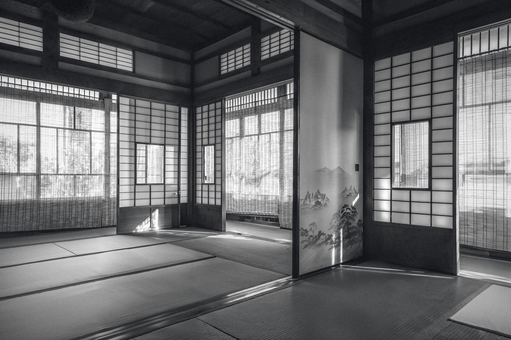

A full class here is fifteen people. We would rather turn you away than teach you badly.
Fifteen on the mat
正直shōjiki. Plainly and honestly. The whole fee, on one page.
Every class is capped at fifteen places so that everyone trains directly with the instructor, and membership is by invitation. When a class is full the booking system says so, and offers you the waitlist rather than a crowded room. Fees are for tuition only. Your first year, all in: £15 for the first class, £95 for the course, £35 for federation membership, then £95 a month if you are invited.
The week. Two classes, the same instructor, the same mat.
Saturday
09:30 to 11:30. All grades, beginners welcome.
A booked place is a confirmed place. A class is full at fifteen.
Tuesday
Evening, two hours. All grades.
Starts at six or seven; the hour is being settled with the hall and will be published here. Write to us and we will tell you first.
Masbro Centre, 87 Masbro Road, London W14 0LR. Adults, eighteen and over. Beginners may attend up to three sessions before registering with the British Aikido Federation.
Published October 2026. Pounds sterling; no VAT is added.
A first classBooked online, paid by card, no obligation.£15
A drop-in class, two hoursAny class with a place free.£35
Monthly membership, by invitationEvery month, by Direct Debit. A guaranteed place among six, offered after a first class and a conversation with sensei. Not bookable online.£95
Ten class pack£28 a class. Valid for six months.£280
The foundations course, six weeksOne payment. Cohorts of three, four times a year. The recommended way to start.£95
Annual membership, two months freeFor invited members who prefer to pay once.£950
British Aikido Federation membership, a yearPaid to the federation after your third session. Includes your personal accident and public liability insurance through the Joint Aikikai Council. Not dojo income.£35
Tuition only
Every fee on this page is for teaching. Equipment is your own: a keikogi once you decide to stay, a hakama and wooden weapons later, as sensei advises.
Equipment, if you want it through us
We supply keikogi, hakama, bokken and jo from Iwata Shokai of Tokyo, the house that dresses Hombu Dojo, and arrange embroidery of your name in Japanese. Ordered through the dojo at our own prices, quoted when you ask; you are free to buy elsewhere.
Financial assistance. Aikido should be open to everyone. A small number of sponsored places exist each year, funded by people and organisations who want the door kept open, for anyone who could not otherwise train. Write to us in confidence; nobody else is told.
One price for membership, the same for everyone; the annual rate is that price paid once, with two months free. Nothing is negotiated and nothing goes on sale. Affordability is handled privately and with dignity.

A full class here is fifteen people. We would rather turn you away than teach you badly.
Fifteen on the mat
Fifteen is the number at which one teacher can still correct every person in the room within two hours. It is also the number that lets beginners train with senior grades rather than beside them. When the six member places are held we run a waitlist, and when the waitlist is long enough we open a third class rather than crowd these two.